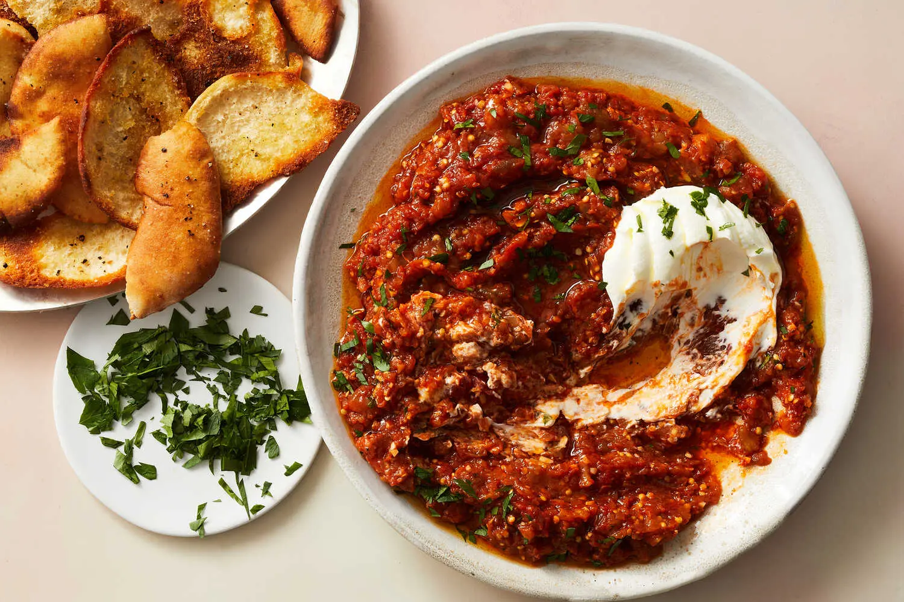

Any Romanian gathering or celebration will inevitably contain an eggplant dish, the most common ones being salată de vinete (eggplant salad — a charred eggplant dip that’s similar to baba ghanouj but uses mayonnaise instead of tahini) and zacuscă (a charred eggplant and pepper dip, similar to ajvar). This family recipe, adapted from “Pass the Plate” by Carolina Gelen (Clarkson Potter, 2024), falls somewhere between the two: The charred eggplant is sweetened with shallots, brightened with tomatoes and spiced with paprika and cumin (sometimes caraway). It’s not as heavy as the mayonnaise-laced dip and not as labor-intensive as zacuscă, making it a faster, lighter alternative to whip up on any occasion. Get ready for one of the most inviting smells you will experience in the kitchen.
Ingredients
- 1medium eggplant (about 1 pound)
- 3tablespoons extra-virgin olive oil, plus more for drizzling
- 2medium shallots, finely chopped
- 4garlic cloves, finely chopped
- 1teaspoon sweet paprika
- 1teaspoon ground cumin
- ½teaspoon freshly ground black pepper
- ¼teaspoon ground cayenne, plus more to taste
- 1(14-ounce) can whole peeled tomatoes
- Kosher salt
- ¼cup chopped fresh parsley (optional), plus more for topping
- ½cup whole-milk Greek yogurt
- Crackers or warm bread2 tablespoons unsalted butter4
Steps
- Step 1 Heat a dry cast-iron skillet over medium until smoking, about 7 minutes. Place the whole eggplant in the skillet. Let the skin sear, undisturbed, until it turns from shiny purple to a muted dark brown, about 5 minutes. Turn the eggplant using tongs and repeat on another side. Continue searing and turning the eggplant until all the skin is charred and nearly flaking off, about 40 minutes total. The eggplant should feel mushy and soft. Transfer the eggplant to a plate.
- Step 2 When the eggplant is cool enough to handle, peel off the charred skin. Set the peeled, mushy eggplant in a colander in the sink. (Draining the juices will eliminate some of its bitterness.)
- Step 3
While the eggplant chars, in a medium saucepan, heat the olive oil over medium. Add the shallots and sauté until translucent and softened, about 3 minutes. Add the garlic, paprika, cumin, black pepper and cayenne, and cook just until fragrant, 1 minute. Carefully add the tomatoes and their juices, crushing them with your hands as you add them, or using the back of a wooden spoon to break them up in the pan. Stir to combine.
- Step 4Transfer the drained eggplant to a cutting board, discard stem, and chop finely. Add it to the tomato mixture in the pan along with a hefty pinch of salt. Stir to combine, bring to a simmer and cook, stirring occasionally, until some of the liquid has reduced, 10 to 15 minutes. Stir in the parsley (if using), taste and adjust the seasoning. Remove the pan from the heat.
- Step 5Spread the warm dip in a shallow bowl. Dollop the yogurt on top. Drizzle with olive oil, top with more parsley (if using) and another pinch of cayenne, if you like. Serve with crackers or warm bread.
Home